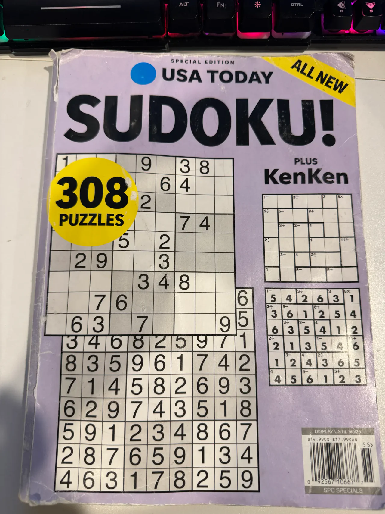
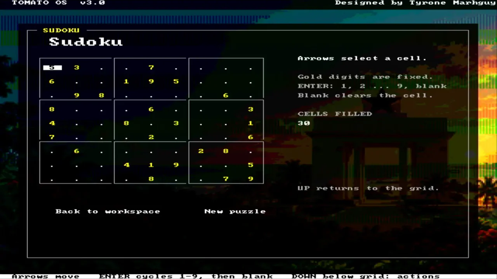
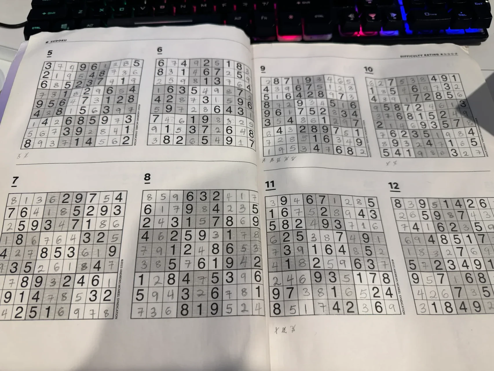

Dispatch · Tomato OS
Of Course Tomato Needs Sudoku
A puzzle book is always within arm’s reach. Tomato gets Sudoku—with arrow keys and a digit-cycle button, without waiting on the full keyboard matrix.
I have been the biggest fan of Sudoku. Almost always a puzzle book lies on my table, next to my table, in my bag, or somewhere close enough that stretching my arm would reach it.
So it only makes sense to build Sudoku into Tomato.


I hesitated earlier because I had not finished soldering the keyboard matrix onto the FPGA PMOD for extended controls. Sudoku obviously wants more than four arrow buttons.
But the problem was larger than it needed to be. I already have the arrow keys to move around the board. Another button can cycle through 1 to 9. Together, that is enough to play.

Sometimes a hardware limitation is not actually a blocker. It just changes the interface. The full matrix still comes. The game does not have to wait for it.